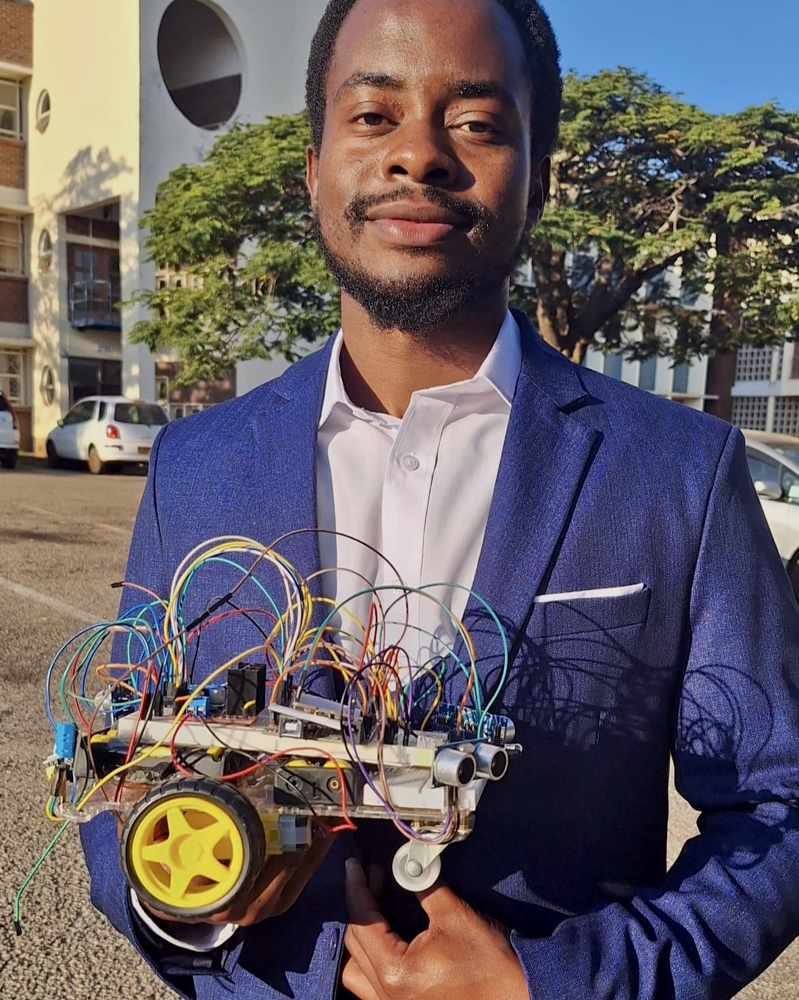

I pursued a Bachelor's degree in Hardware Engineering at the University of Zimbabwe, where I developed a strong foundation in electronics, computer systems, programming and engineering principles. Throughout my studies, I became increasingly interested in how hardware and software work together to solve real-world problems.
